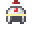
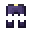
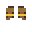

Armour
Helmets, chest pieces, leggings, boots and shields - how armour is rolled for each class, how much it gives, and how to wear 3D headpieces.
The armour slots
| Slot | Type on the tooltip | Share of a full set's armour |
|---|---|---|
| Head | Helmet | 15% |
| Chest | Body Armour | 40% |
| Legs | Leggings | 30% |
| Feet | Boots | 15% |
| Off hand | Shield (Warriors) | its own value |
Armour only counts in its own slot. Like all gear, it has an item level: below that level it gives no armour, no toughness and no stats, and it doesn't count toward a set (see gear).



Made for a class
When armour drops, it is rolled for a class: 70% of the time the receiver's class, otherwise one of the others. At the forge you choose the class yourself. The tooltip shows it as Made for ⚔ Warrior (plus the subclass when it was rolled for one).
The class decides three things:
- The look. Warrior pieces are iron and chainmail. The other classes wear leather dyed in their colour, and Herald pieces carry his own trims.
- How heavy it is. Each class gets a share of the plain armour value:
| Made for | Armour |
|---|---|
| Warrior | 130% |
| Herald | 95% |
| Archer | 85% |
| Rogue | 80% |
| Mage | 70% |
- Which affixes it leans to. Warrior pieces tend to roll big defensive stats (Fortitude, Toughness, Vitality, Steadfast). Rogue and Archer pieces lean to Ferocity, Precision and Swiftness, and Mage and Herald pieces to Arcana. Any piece can still roll any stat. A favoured stat just tends to roll high, and an unfavoured one low.
Only Warrior pieces roll armour toughness.
Anyone can wear any armour, whatever it was made for.
How much armour?
A full four-piece set gives 2.5 + 0.1 armour per power point (item level + rarity number). That is then multiplied by the class share above and the piece's quality roll (see rarity).
Approximate armour from a full four-piece set (Common / Legendary, low-high):
| Item level | Warrior | Herald | Archer | Rogue | Mage |
|---|---|---|---|---|---|
| 1 | 3.0-3.5 / 4.2-4.8 | 2.2-2.6 / 3.1-3.5 | 2.0-2.3 / 2.8-3.2 | 1.8-2.2 / 2.6-3.0 | 1.6-1.9 / 2.3-2.6 |
| 10 | 4.0-4.7 / 5.5-6.2 | 2.9-3.4 / 4.0-4.6 | 2.6-3.1 / 3.6-4.1 | 2.4-2.9 / 3.4-3.8 | 2.1-2.5 / 2.9-3.4 |
| 25 | 5.6-6.6 / 7.5-8.6 | 4.1-4.8 / 5.5-6.3 | 3.7-4.3 / 4.9-5.6 | 3.5-4.1 / 4.6-5.3 | 3.0-3.6 / 4.0-4.6 |
| 50 | 8.4-9.9 / 10.9-12.5 | 6.1-7.2 / 8.0-9.1 | 5.5-6.5 / 7.1-8.2 | 5.2-6.1 / 6.7-7.7 | 4.5-5.3 / 5.9-6.7 |
Each piece is rounded on its own, so real sets can be a little off these numbers. Fortitude and Toughness from your stats add more armour on top.
Shields give 0.5 + 0.03 armour per power point (about 0.5 at level 1 and 2 at level 50), times the base's own armour %. The Tower Shield is 112% and the Barrow Door 120%.
Extra lines on Rare and up
Rare and better rolled armour may carry one weapon line it normally wouldn't have: attack damage or attack speed. Rogue and Archer pieces lean toward these. See rarity for the chances.
Named armour
- Set pieces give set bonuses when you wear several pieces of the same set.
- Uniques have fixed stats and often a passive skill, such as Owleye Cowl (Night Eyes: you can see in the dark), Springheel Boots (Spring Step: you jump much higher) or Salamander Mail (Ember Ward: fire and lava can't burn you).
- Their armour follows their item level too. The value written for them is what they have at item level 25. Below that they have less, and above it more.
3D headpieces
Set and unique helmets are 3D models worn on your head. They are not vanilla armour items, so right-click with one in your hand to put it on. Whatever you wore before comes into your hand. To take one off, click it out of your helmet slot. Their armour, toughness, stats, passives and set count work like any other helmet. Rolled helmets stay normal armour.